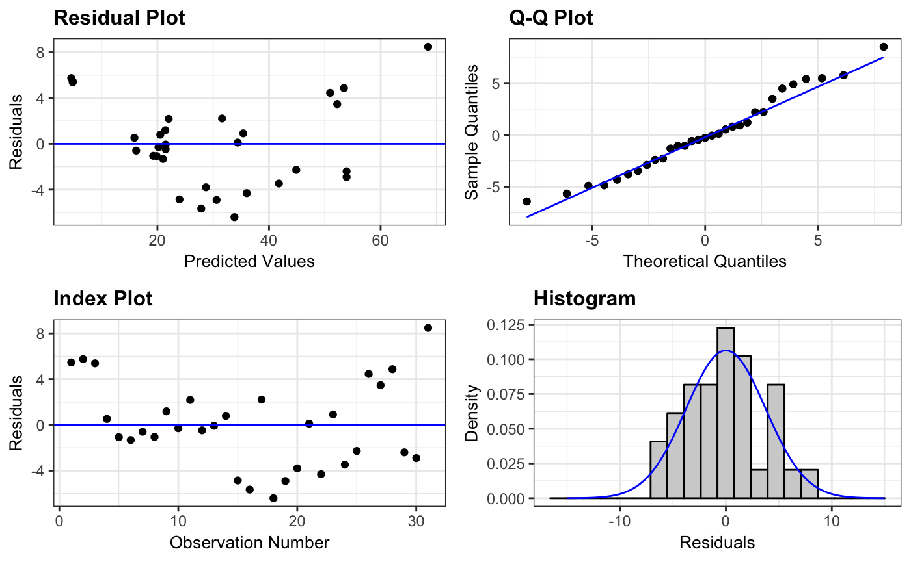
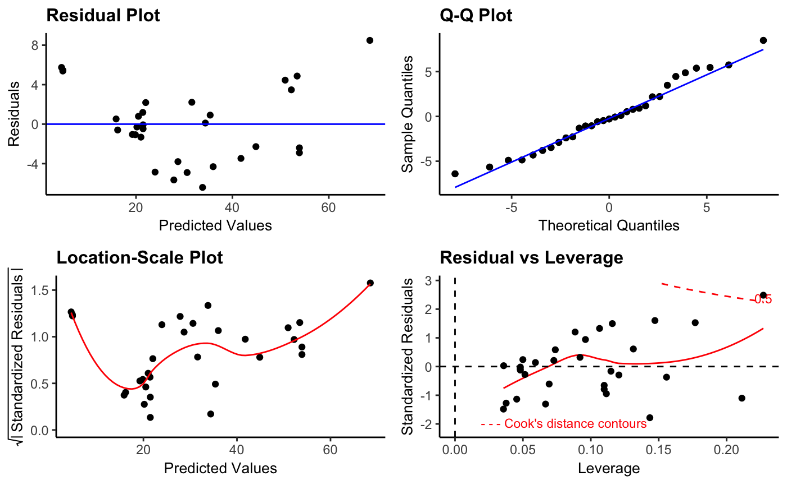
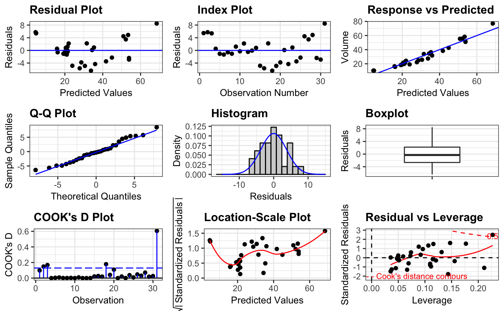
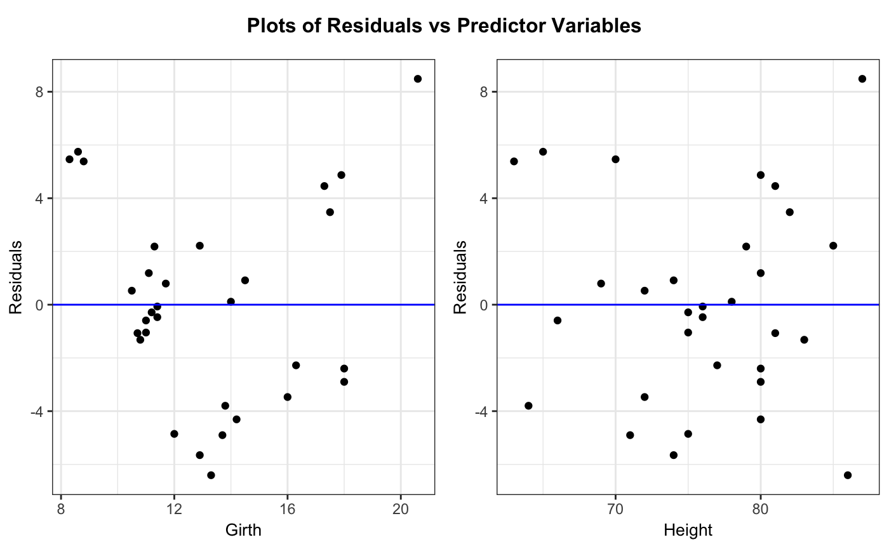
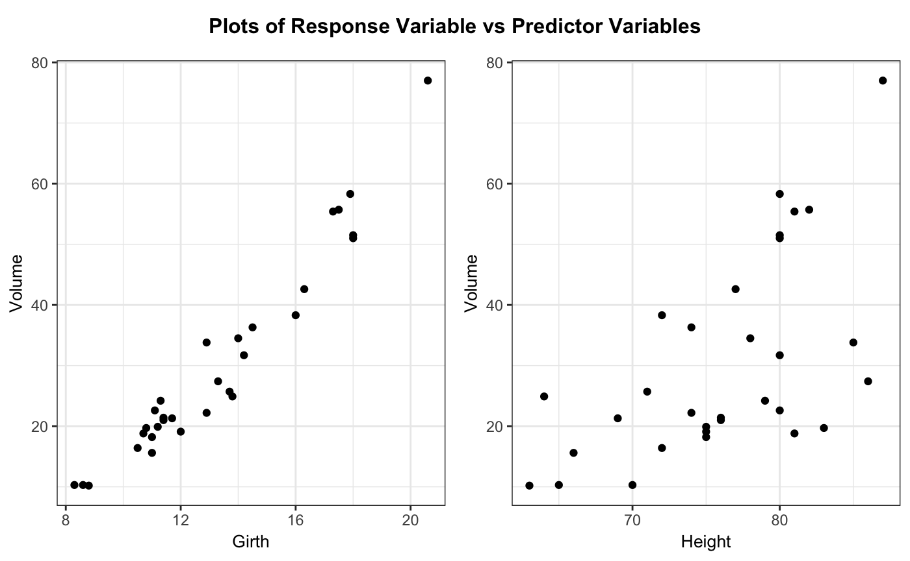
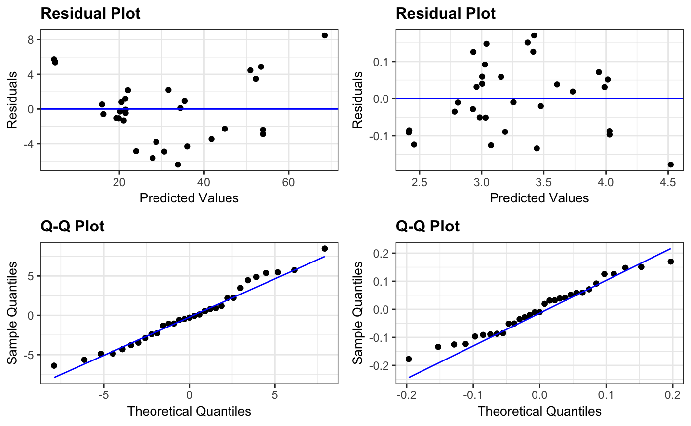

ggResidpanel is an R package for creating panels of diagnostic plots for a model using ggplot2 and interactive versions of the plots using plotly.
Installation
Follow these instructions to install ggResidpanel from the GitHub repository. (ggResidpanel is not currently available on CRAN.)
Install ggResidpanel from the GitHub repository using the devtools package.
devtools::install_github("goodekat/ggResidpanel")Load the ggResidpanel library.
# Load the library
library(ggResidpanel)Overview and Examples
The package provides five functions that allow the user to assess diagnostic plots from a model. Each of these functions is described below with examples to show the type of image that is output from the function. The functions have multiple input options such as the formatting options of scale, theme, axis.text.size, title.text.size, and title.opt. See the documentation or vignettes for more details about how to use the functions.
resid_panel: This function creates a panel of residual diagnostic plots given a model of type “lm”, “glm”, “lmerMod”, “lmerModLmerTest”, and “glmerMod”. It allows the user to select a panel of plots from the options in the package or create their own panel by selecting from the plots available for this function.
# Fit a linear model
lm_model <- lm(Volume ~ Girth + Height, data = trees)
# Create the default panel of plots
resid_panel(lm_model, bins = 20)
# Create the R panel of plots and change the theme to classic
resid_panel(lm_model, bins = 20, plots = "R", theme = "classic")
# Create a panel with all plots available
resid_panel(lm_model, plots = "all", bins = 20)
resid_interact: This function creates interactive versions of residual diagnostic plot panels given a model. It accepts models of type “lm”, “glm”, “lmerMod”, “lmerModLmerTest”, and “glmerMod”. Similar to resid_panel, it allows the user to select a panel of plots from the options in the package or to create their own panel by selecting from the plots available for this function.
# Create an interactive panel of the default diagnostic plots
resid_interact(lm_model)
resid_xpanel: This function creates a panel of plots of the residuals or response variable versus the predictor (x) variables in the model. It accepts models of type “lm”, “glm”, “lmerMod”, “lmerModLmerTest”, and “glmerMod”.
# Create a panel of plots of the residuals versus the predictor variables
resid_xpanel(lm_model)
# Create a panel of plots of the response variable versus the predictor variables
resid_xpanel(lm_model, yvar = "response")
resid_compare: This function creates a panel of residual diagnostic plots given a list of models. This allows the user to compare the diagnostic plots from multiple models. It currently accepts models of type “lm”, “glm”, “lmerMod”, “lmerModLmerTest”, and “glmerMod”.
# Fit the model with a log transformation on the response variable
lm_model_log <- lm(log(Volume) ~ Girth + Height, data = trees)
# Plot the residual and normal quantile plots for the two models
resid_compare(list(lm_model, lm_model_log), plots = c("resid", "qq"))
resid_auxpanel: This function creates a panel of residual diagnostic plots given inputs of residuals and fitted values to use for models not accepted by resid_panel. Users can select from panel options in the package or create their own panel from the plots available for this function.
# Fit a random forest model to the mtcars data to predict the mpg
rf_model <- randomForest::randomForest(x = mtcars[,2:11], y = mtcars[,1])
# Obtain the predictions from the model on the observed data
rf_pred <- predict(rf_model, mtcars[,2:11])
# Obtain the residuals from the model
rf_resid <- mtcars[,1] - rf_pred
# Create a panel with the residual and index plot
resid_auxpanel(rf_resid, rf_pred, plots = c("resid", "index"))